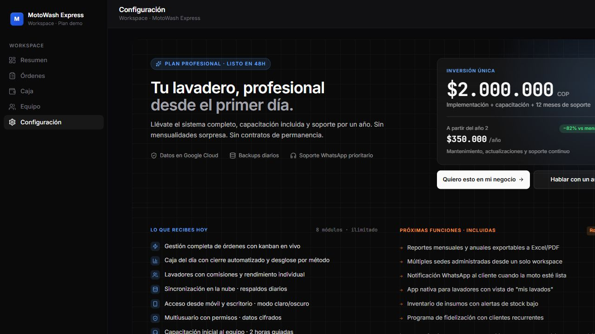

Detectamos cuellos de botella.
Startup lab + IA aplicada para pymes
Software a medida para negocios que ya no quieren operar en caos.
Diseño sistemas, dashboards, automatizaciones y agentes de IA que convierten procesos manuales en operaciones medibles, simples y listas para crecer.
Validamos con una demo funcional.
Construimos software conectado.
Medimos con dashboards y alertas.
Lo que vendemos
Menos operación improvisada. Más sistema, datos y seguimiento.
MejorIA funciona como un laboratorio de producto para pymes: entendemos el proceso, lo convertimos en software y dejamos una capa de IA donde realmente aporta.
Aplicaciones web a medida
Caja, agenda, inventario, clientes, servicios, roles y reportes sin depender de plantillas genéricas.
Dashboards ejecutivos
Indicadores para ver ventas, rendimiento, stock, productividad y decisiones pendientes.
Flujos conectados
n8n, Firebase, APIs, formularios, notificaciones, correos, WhatsApp y reportes programados.
Consultoría y talleres
Acompaño equipos para usar IA con criterio, seguridad y casos reales de productividad.

Demo viva
Moto Wash Manager
Producto para lavaderos de motos en Medellín: ordenes, servicios, lavadores, pagos, configuración de negocio y lectura operativa en una sola interfaz.
Firebase
React
Operación real
Dashboard-ready
Sistemas agenticos
IA que no se queda en chat: ejecuta, recuerda y trabaja con tus herramientas.
Estoy investigando e implementando arquitecturas tipo Hermes Agent y OpenCLab: agentes locales con tareas persistentes, memoria, permisos, integraciones y supervisión humana.
Tareas persistentes
Agentes que mantienen contexto, revisan pendientes y continúan trabajos sin depender de una conversación aislada.
Canales remotos
Conexiones con WhatsApp, Telegram, Discord o correo para operar procesos mientras el equipo sigue en movimiento.
Control y auditoría
Dashboards, logs, aprobaciones humanas y reglas claras para que la IA ayude sin perder trazabilidad.
Mario Yesid Peláez Sánchez
Ingeniero de sistemas construyendo producto, automatización e IA aplicada.
Vengo de datos, reportes y procesos operativos. Hoy mi enfoque es crear herramientas que ayuden a pequeñas y medianas empresas a trabajar con más claridad: software a medida, dashboards, flujos automatizados y agentes de IA supervisados.
React
TypeScript
Firebase
Python
SQL
n8n
MCP
Hermes Agent
OpenCLab
Dashboards
Consultoría IA
Primer paso